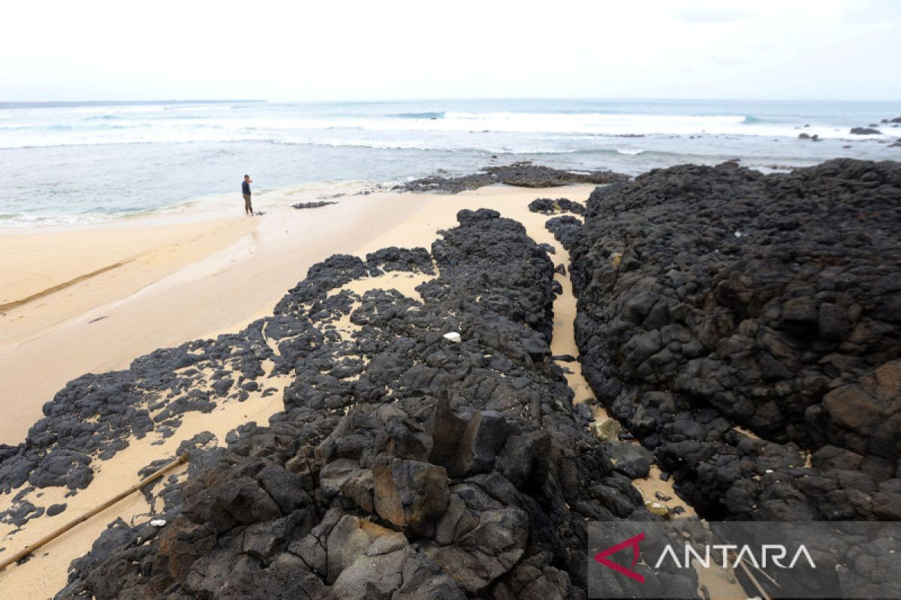
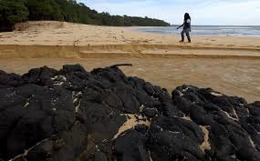
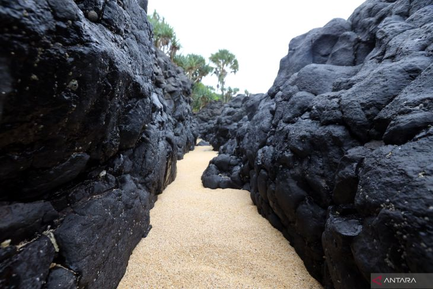
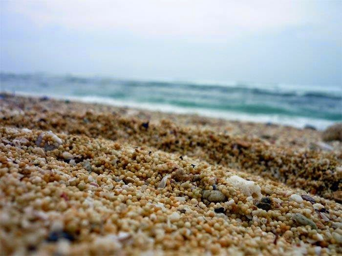
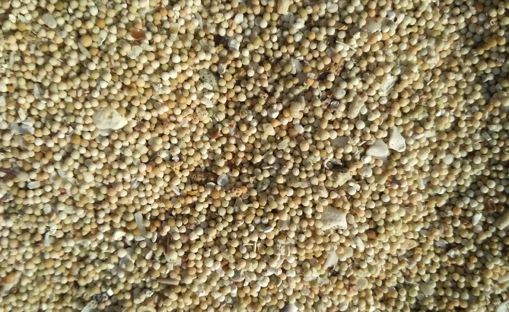
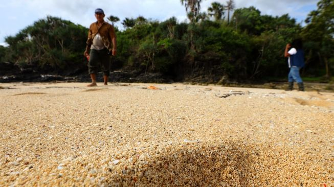

Pantai Parang Ireng
Pantai unik dengan batuan vulkanik berwarna hitam dan pasir gotri berukuran besar
Galeri Foto






Informasi Detail
Pantai Parang Ireng adalah salah satu permata tersembunyi yang eksotis di Kabupaten Banyuwangi, Jawa Timur, dan merupakan bagian dari kawasan Taman Nasional Alas Purwo (TN Alas Purwo). Nama "Parang Ireng" sendiri berasal dari bahasa Jawa, yang berarti "Batu Hitam" (Parang = batu karang, Ireng = hitam), mengacu pada formasi bebatuan lava berwarna gelap yang menjadi ciri khas utama pantai ini.
Keunikan
- Formasi Batuan Lava Hitam (Parang Ireng): Keunikan paling mencolok adalah keberadaan bebatuan karang besar yang tersusun dari lava beku berwarna hitam pekat
- Pasir Gotri: Pantai ini dikenal memiliki jenis pasir yang tidak biasa, yang sering disebut "pasir gotri" karena butirannya yang relatif lebih besar dan membulat dibandingkan pasir halus biasa, menyerupai kelereng kecil atau gotri.
- Tersembunyi dalam Kawasan Konservasi: Akses yang sulit membuat pantai ini masih sangat alami, asri, dan terawat (sering disebut perawan) serta sepi pengunjung, cocok bagi Anda yang mencari ketenangan dan keindahan alam murni.
Aktivitas yang Bisa Dilakukan
- Eksplorasi & Fotografi
- Menjelajahi Formasi Batuan
- Mengamati Pasir Gotri
- Menikmati Kesunyian
- Relaksasi dan Menikmati Alam
- Menikmati Sunset
- Trekking dari Pos Pancur
- Piknik Sederhana
Info Praktis
- Lokasi: Berada di dalam kawasan Taman Nasional Alas Purwo (TN Alas Purwo)., Purworejo, Kalipait, Kec. Tegaldlimo, Kabupaten Banyuwangi
- Biaya Masuk: sekitar Rp 5.000 per orang untuk wisatawan domestik dan Sekitar Rp 150.000 per orang untuk wisatawan mancanegara
- Waktu Terbaik Berkunjung: Musim Kemarau (sekitar April hingga Oktober) pada Pagi hari untuk menikmati suasana yang tenang dan udara segar.
- Transportasi: Jarak sekitar 61 km, waktu tempuh sekitar 2 jam menggunakan mobil atau motor.
- Akomodasi: Akomodasi terdekat biasanya tersedia di luar kawasan TN Alas Purwo, atau di area yang lebih ramai seperti kota Banyuwangi atau sekitar area destinasi wisata lain di Tegaldlimo.
Peraturan Kunjungan
- Wajib melapor dan membayar tiket masuk di Pos Pancur
- Dilarang keras melakukan perburuan, menangkap, melukai, atau membunuh satwa liar
- Dilarang mengambil tumbuhan, bunga, atau benda-benda alam
- Wajib membawa kembali semua sampah keluar dari kawasan Taman Nasional.
- Selalu patuhi instruksi dari petugas